画像をタップすると詳細が表示されます
推薦組の合格により若干名の受け入れが可能になりました。人気の17時〜19時台の枠もございます。通常、新規募集は新年度切り替えのタイミングのみ実施しておりますが、今年は推薦組が多かったため、このようにスポットでの募集をいたします。
JUKU STYLE / 学習塾スタイル
どこで学ぶか。それはライフスタイルの選択。
個別指導と自立型学習で、あなただけの学びを。
学習塾スタイルの特徴
一人ひとりに寄り添い、自分から学べる力を育てます。
FEATURE 04
小学生・中学生・高校生を対象に指導する学習塾です。勉強することが得意ではない塾生から、難関校・難関大学を目指す塾生まで、それぞれの目標に向けて頑張っています。
FEATURE 05
指導から保護者対応まで、すべて塾長が一貫して行います。生徒数を限定しておりますが、価格以上の満足度を保証いたします。無料の振替制度・オリジナル教材など、塾生への特典もたくさんあります。
FEATURE 06
１人あたりのスペースを十分に確保しています。２人掛け用の机を１人で使用してもらい、問題集・参考書・タブレットを快適に使用できます。居心地のよい学習環境を提供できるよう工夫しています。
コース・料金
学年や目標に合わせて選べるコースをご用意しています。開講日：毎週月〜土 授業時間帯：17:00〜21:00（相談の上決定）
LAB / 授業はまるで研究室
個別指導ラボ
先生と一緒に「なぜ？」を研究する。解説と演習をバランスよく、じっくり理解を深めるコースです。
① 小学生クラス
講師1人：生徒1〜3人
個々の学力に応じた指導
復習・先取り学習も可能
講師1人：生徒1〜3人
個々の学力に応じた指導
復習・先取り学習も可能
講師1人：生徒1〜3人
演習と解説のサイクル
受験対策にも対応
講師1人：生徒1〜3人
演習と解説のサイクル
受験対策にも対応
② 中学1・2年生クラス
講師1人：生徒1〜3人
基礎カテ・発展カテに分類
講師1人：生徒1〜3人
基礎カテ・発展カテに分類
講師1人：生徒1〜3人
志望校に向けて学習
講師1人：生徒1〜3人
志望校に向けて学習
③ 中学3年生クラス
講師1人：生徒1〜3人
3カテゴリで志望校対策
講師1人：生徒1〜3人
3カテゴリで志望校対策
講師1人：生徒1〜3人
3カテゴリで志望校対策
④ 高校生クラス
講師1人：生徒1〜3人
個々の学力に応じた指導
大学受験対策にも対応
講師1人：生徒1〜3人
個々の学力に応じた指導
大学受験対策にも対応
講師1人：生徒1〜3人
先取り学習も可能
大学受験対策にも対応
QUEST / 知の探索に出かけよう
個別指導クエスト
自分でどんどん問題を攻略する。演習量をたっぷり確保し、「自分で解ける力」を伸ばすコースです。
⑤ 小学生クラス／中学1・2年生クラス
講師1人：生徒1〜4人
まずは始めやすいプラン
勉強習慣の土台づくり
講師1人：生徒1〜4人
じっくり演習時間を確保
1回あたりの学習量アップ
講師1人：生徒1〜4人
学習量をしっかり確保
「解ける力」を育てる演習中心
講師1人：生徒1〜4人
がっつり演習で実戦力UP
定期テスト対策にも最適
⑥ 中学3年生クラス／高校生クラス
講師1人：生徒1〜4人
長時間で集中演習
受験対策にも対応
講師1人：生徒1〜4人
週2回のペースで学習習慣化
受験対策にも対応
講師1人：生徒1〜4人
がっつり演習で実戦力UP
大学受験・志望校対策に
入塾時・入塾後の費用
【入塾時】
入塾金：10,000円
テキスト代：2,500〜5,000円程度
（申込教科数により異なります）
【入塾後】
月の授業料のみ（月謝制）
進級時にテキスト代のみ追加
記載以外の費用は一切かかりません
季節講座（夏・冬）は任意受講
※料金はすべて税込です。
スタイルの考え方
学習塾スタイルが大切にしていること。
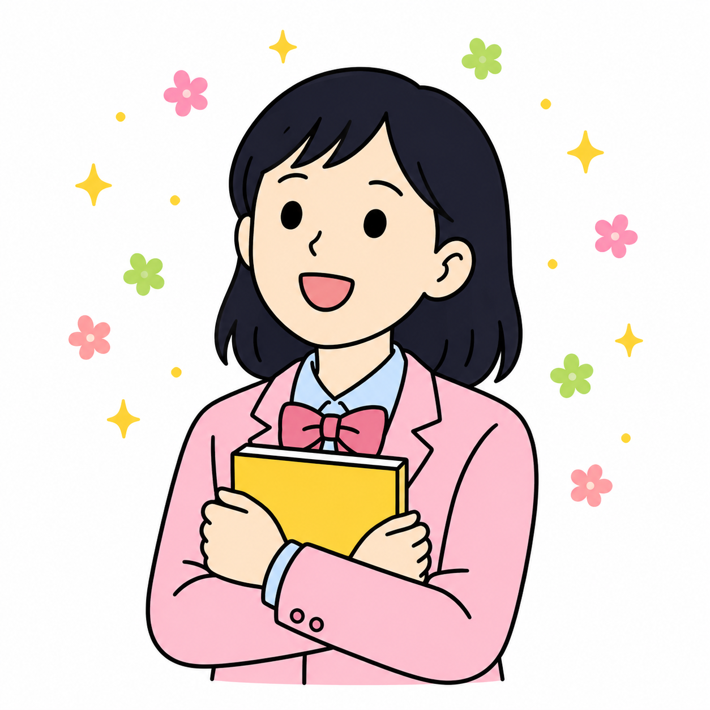
スタイルでは、「スタイルへ携わる人の生活を豊かにする」ということをメインミッションに掲げています。例え、表現の仕方が多少変わることが今後あるとしても、このスタイルが掲げるミッションの本質は揺るぎないものです。
では「生活を豊かにする」とは具体的にどういうことでしょうか？例えば、スタイルでの体験を通して勉強そのものが好きになってくれれば、それ以上の喜びはありません。スタイルでは、新たな知識を得ることの楽しさ・ゲーム的な面白さを指導の中に取り込み、勉強が元々得意な人にはもちろんのこと、苦手意識を持っている人にも、その楽しさを体験できるよう工夫をしています。
ただし、これはスタイルが提唱する、「生活を豊かにする」という表現の1つでしかないと考えています。場合によっては、どうしても勉強には抵抗が…という人もいると思います。自分１人では、なかなか上手く勉強に取り組めないという人には、その手助けはもちろんのこと、苦手なことへの負担をできるだけ軽減できるような指導法をとっています。苦手なことそのものを避けるという意味ではなく、苦手なことと上手く付き合い、自分で対処できるようになることを目指し、そのアシストをします。皆が皆一様に、100点を目指す、難関校・難関大学を目指す、と言った学習目標をたてるのはナンセンスだと思いませんか？
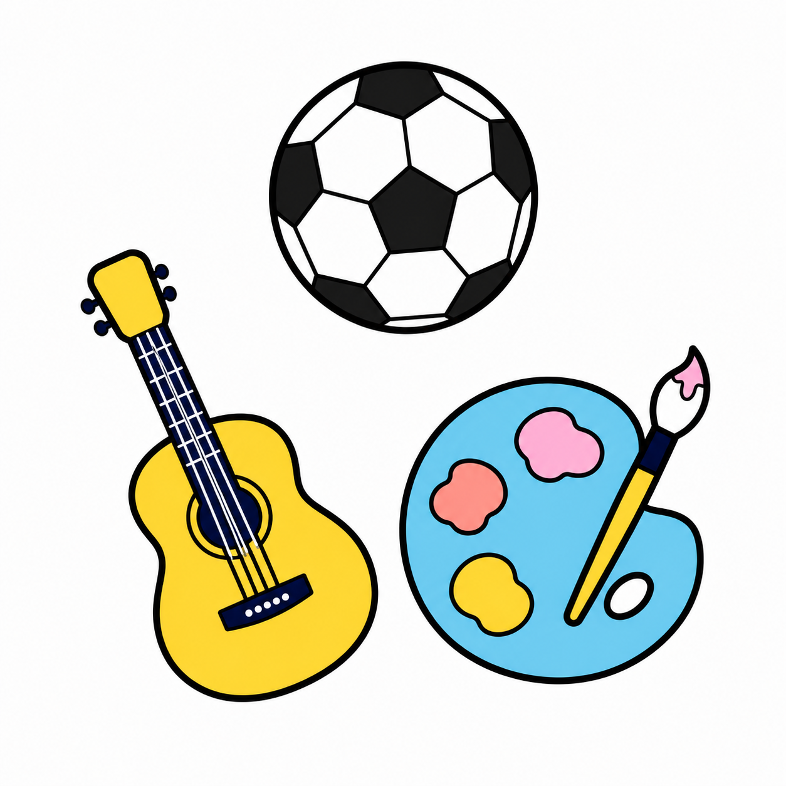
特に、勉強に対して苦手意識を持っている生徒には、勉強を強いるような環境は、勉強に対して嫌なイメージを増大させてしまうリスクもあります。苦手なことへ向き合う姿勢は、勉強だけに限らず何事においても大切ですが、得意不得意は人それぞれ。勉強であれば、不得意なところはスタイルに任せてください。苦手なことへのストレスや労力が軽減した分、例えそれが勉強以外のことであっても、自分が打ち込める"何か"を精一杯頑張って欲しいと考えています。なぜならそれが結果として、間接的なものであったとしても、勉強と相乗効果をもたらすとスタイルは確信しているからです。
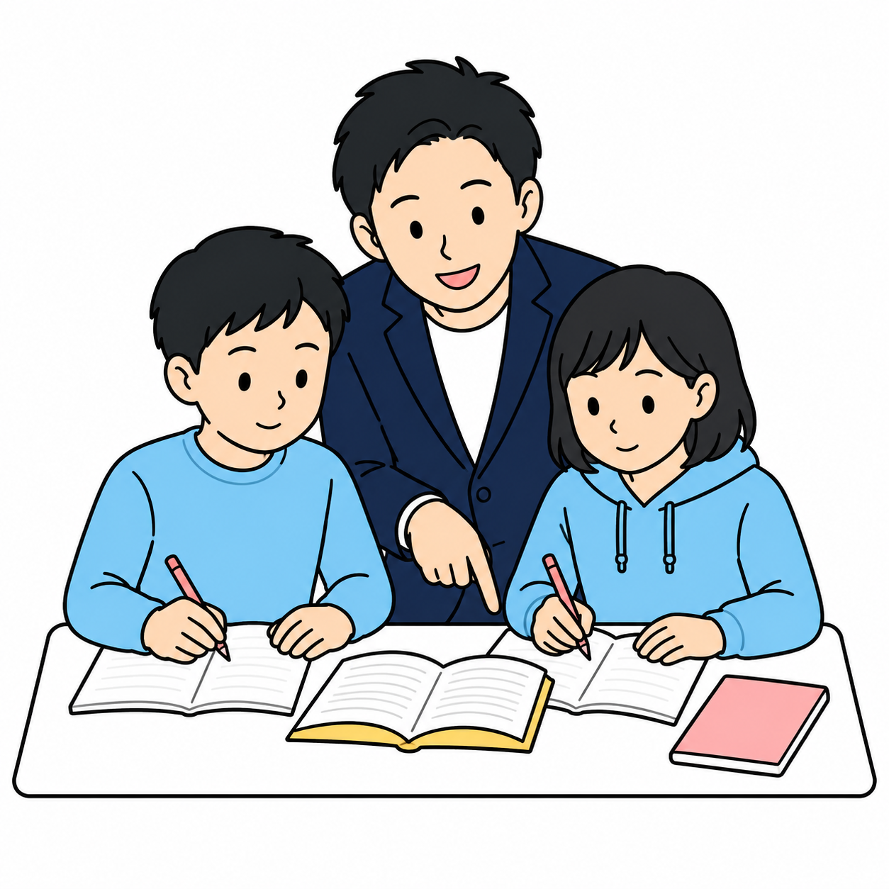
「やる気はあるけど、何をどうしたら良いのか分からない」「勉強時間はたくさんとっているのに、結果が思うように出ない」という人にも、スタイルが最適。押さえるべきポイントと家庭学習でのコツを丁寧に指導します。言わば勉強のフォームを教えます。
身近な例を用いますと、あらゆるスポーツや武道において、そのフォームや型はとても大切です。サッカーであればキックフォーム、柔道であれば技の型と言った具合です。どちらの場合も、ちょっとした置き足の位置であったり、フォロースルーの動作を意識するだけで、力の伝わりが効率的になり、無駄なモーションが改善されます。スタイルではこのように、塾生へ勉強のフォームを指導するトレーナーの役割も兼ねています。正しい方法を学んだ生徒は自発的に勉強へ取り組むようになり、成績も加速度的に上昇します。
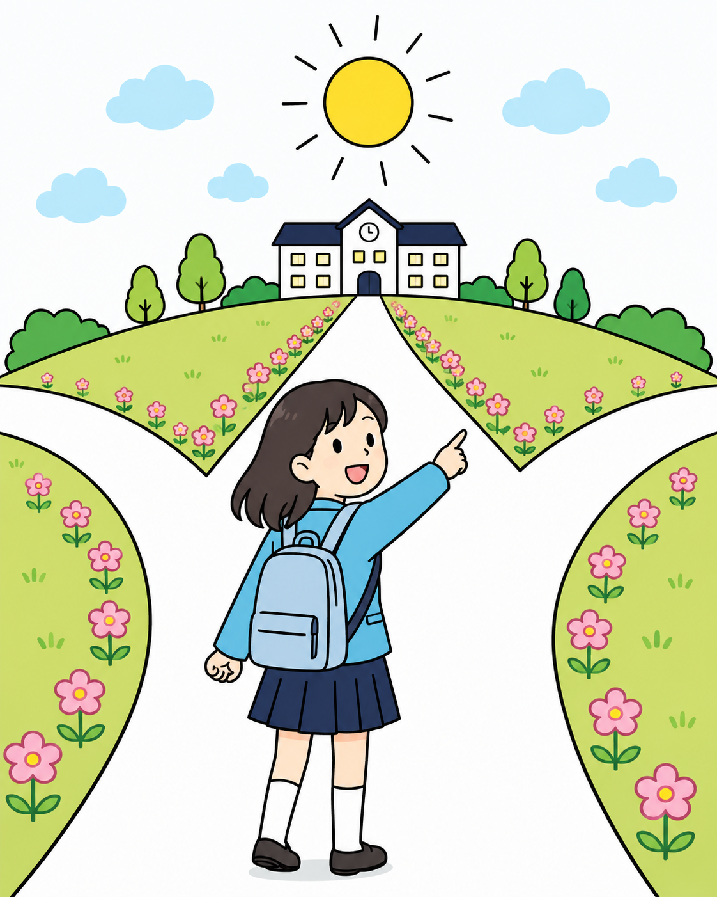
学生時代にしなくてはならないことはとにかく膨大です。また学生時代はその人生の方向性に大きく関わる大切な期間です。そして「どこの塾へ行くか？」ということも、豊かな学生時代を送るための柱となってきています。その経験が豊かであれば、その後の人生を豊かにすることは言うまでもありません。
スタイルは勉強をライフスタイルの1つとして提案する学習塾です。人生の多様性が求められ、時代の過渡期にある今、勉強とは人生により多くの選択肢を与えてくれる素敵なものです。今後もその傾向が増していく状況にあるでしょう。
ライフスタイルの選択としてスタイルをお選び頂ければ幸いです。
塾長のつぶやき
日々の出来事や教育への想いをつぶやいています。
学習ブログ
勉強法・受験対策・お子様の学びをサポートする情報を毎週お届けします。
「頭の良さは生まれつき」という思い込みが成績を下げる。成長マインドセットの科学的根拠と家庭での実践法を解説。
「どうせ自分には無理」が口癖の子に効く、自己効力感の科学と家庭での育て方を解説します。
自分の言葉で書き出すだけで記憶が定着する「生成効果」の仕組みと、今日から使える実践法を解説します。
25分集中＋5分休憩のポモドーロ技法の科学的根拠と、家庭での正しい実践方法を解説します。
朝と夜、どちらに勉強するのが正解？クロノタイプの科学をもとに、わが子に合った学習時間帯の見つけ方を解説します。
「ゾーン」に入ると勉強効率が跳ね上がる。フロー状態のメカニズムと家庭でできる実践法を科学的に解説します。
親や先生の「期待」が子どもの成績を本当に変える。その科学的根拠と家庭での実践法を解説します。
「わかったつもり」を防ぐメタ認知の科学的な仕組みと、今日から使える具体的な実践法を解説します。
文字と図を組み合わせる「二重符号化」の科学的根拠と、今日から使える具体的な勉強法を解説します。
脳の「作業台」ワーキングメモリの仕組みを知ると、なぜ勉強が続かないかが見えてくる。今日から使える鍛え方を科学的に解説。
同じ科目をまとめて勉強するより「あえて混ぜる」ほうが記憶に定着する。その科学的な理由と実践方法を解説します。
同じ時間を使うなら「まとめて勉強」より「間隔を空けた勉強」が圧倒的に記憶に残る。その科学的なメカニズムと実践法を解説。
運動と学習効果の関係を科学的に解説。なぜ体を動かすと記憶力や集中力が上がるのか、今日から使える実践法を紹介します。
睡眠中に脳が記憶を整理・定着させるメカニズムを解説。今夜から試せる睡眠活用法を紹介します。
「読むだけ勉強」より「自分でテストする」ほうが記憶に残る。科学的根拠と今日から使える実践法を紹介。
「解く」だけで記憶が定着する？テスト効果の仕組みと今日から使える実践法を解説します。
「読むより解く」が記憶定着に効く理由を認知科学の研究をもとにわかりやすく解説します。
子どもが勉強しないとき、つい感情的になってしまう保護者の方へ。なぜ勉強しないのか、どう向き合えばいいのかを現場目線で解説します。
「勉強しなさい」と言うほど子どもが勉強から遠ざかる理由と、実際に効果のある声かけ方法を現場の経験から解説します。
「勉強しなさい」と言うほど子どもが勉強から遠ざかる理由と、親子関係を壊さない声かけのコツを塾講師が解説します。
授業の様子
スタイルの日常をお届け。塾生たちの頑張る姿をご覧ください📸
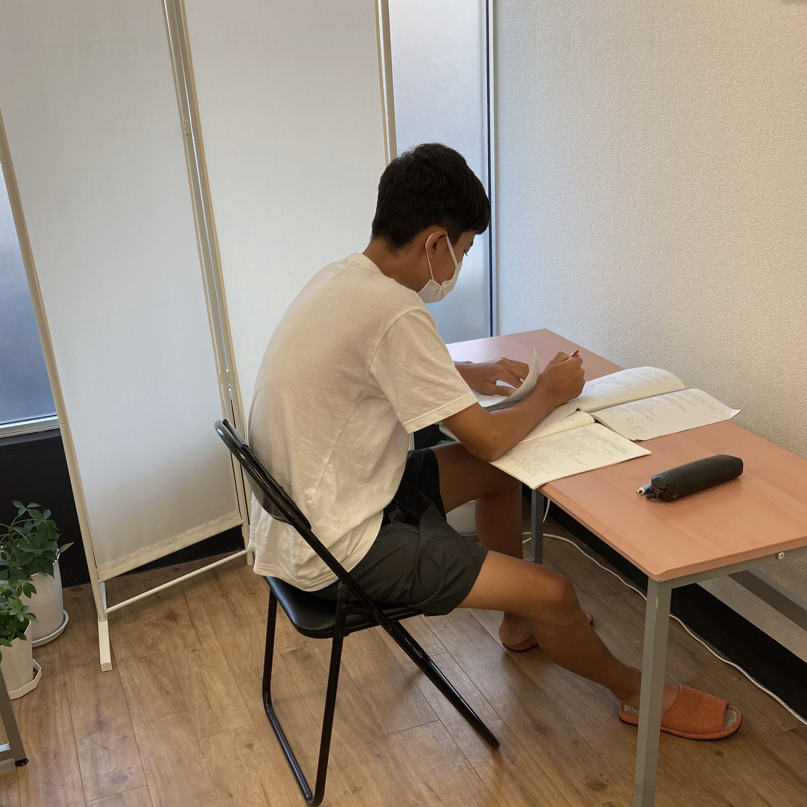
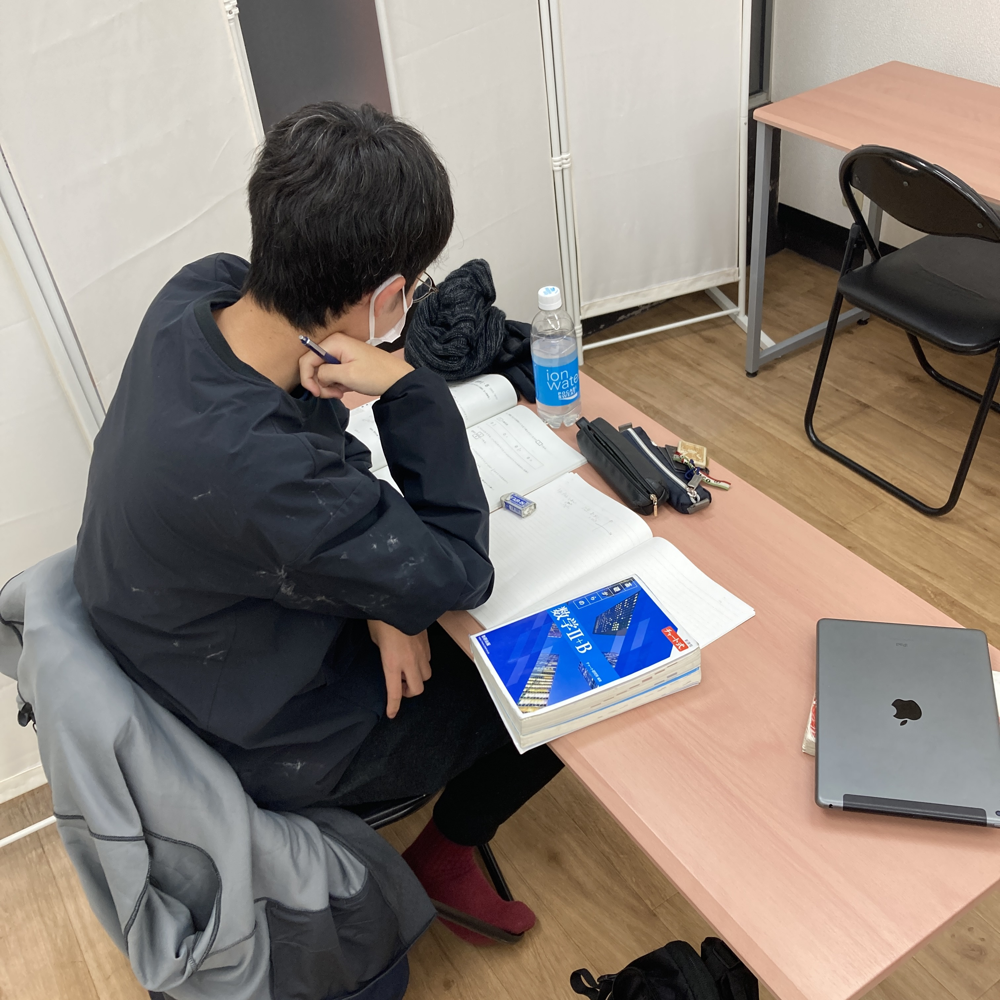
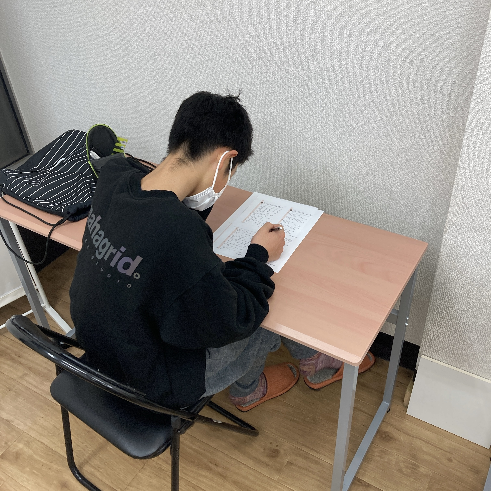
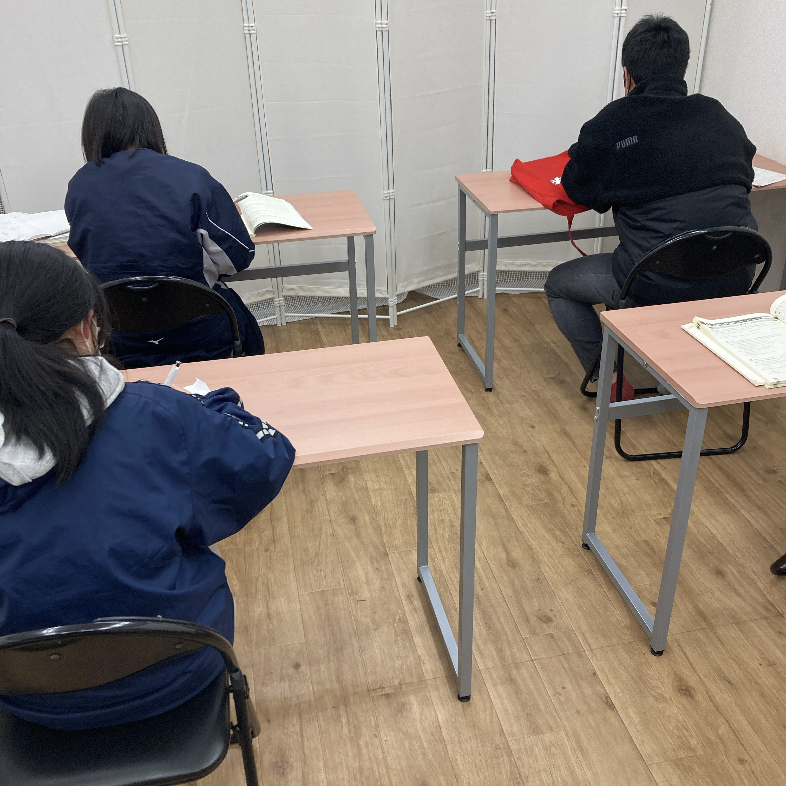
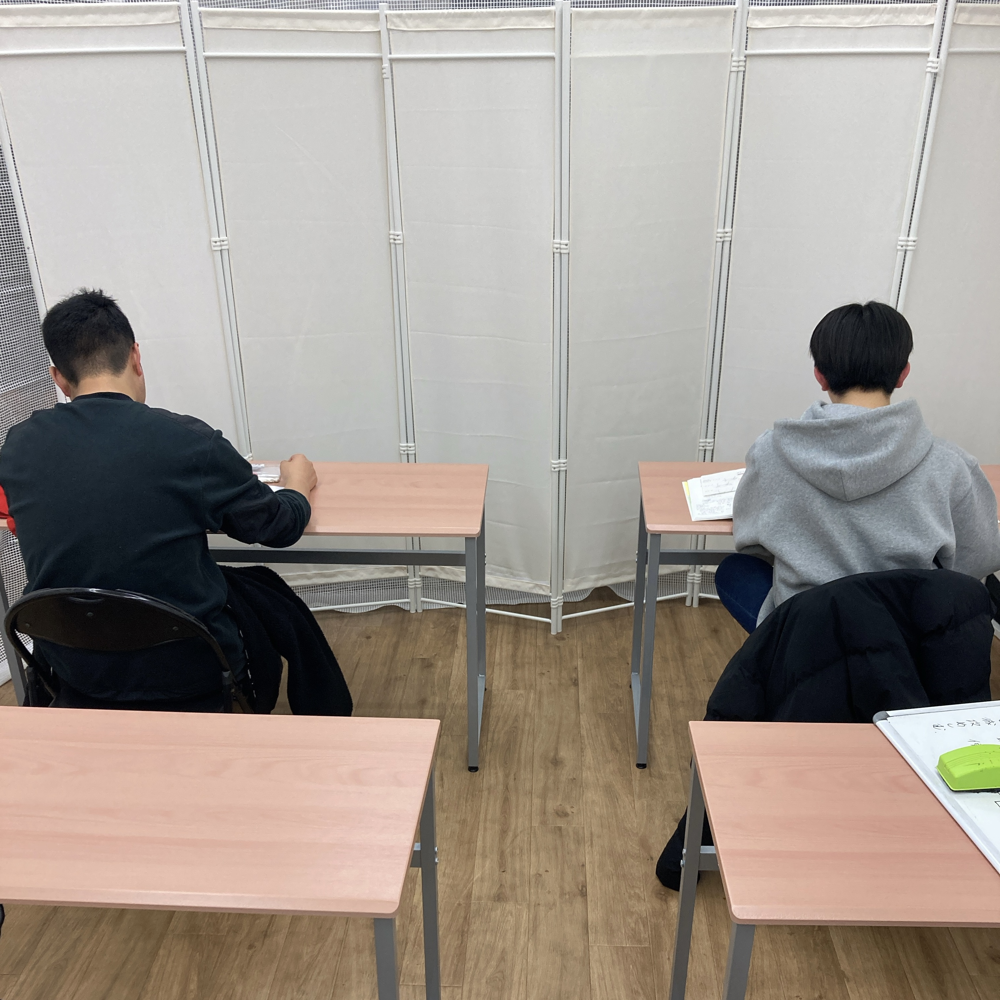
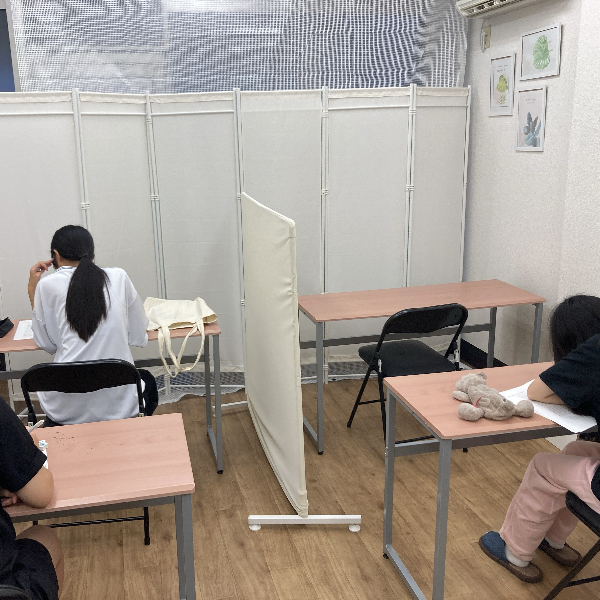
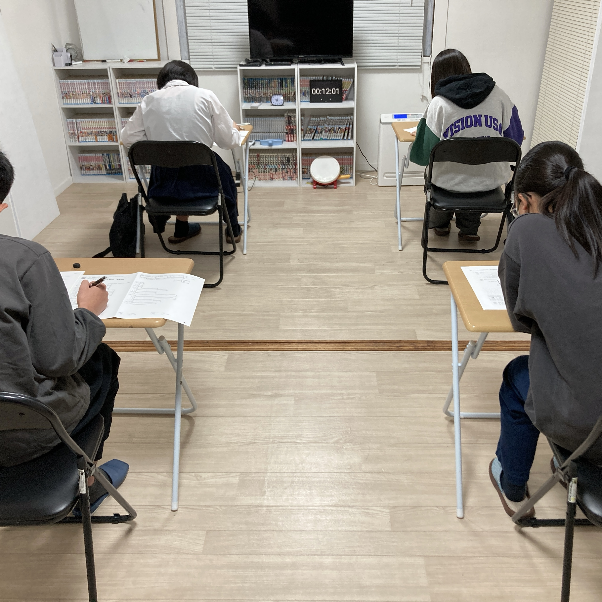
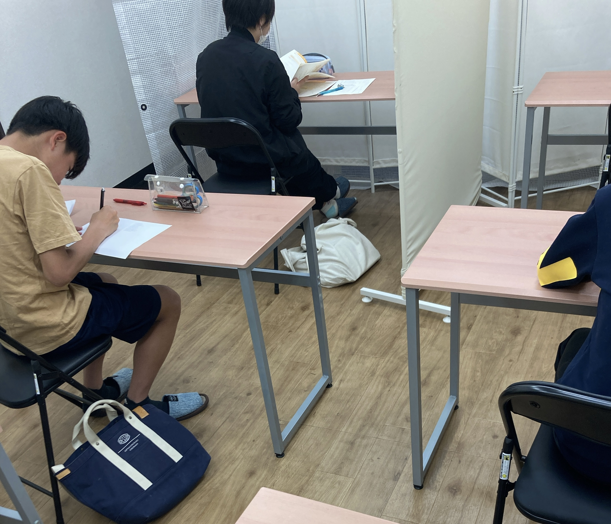
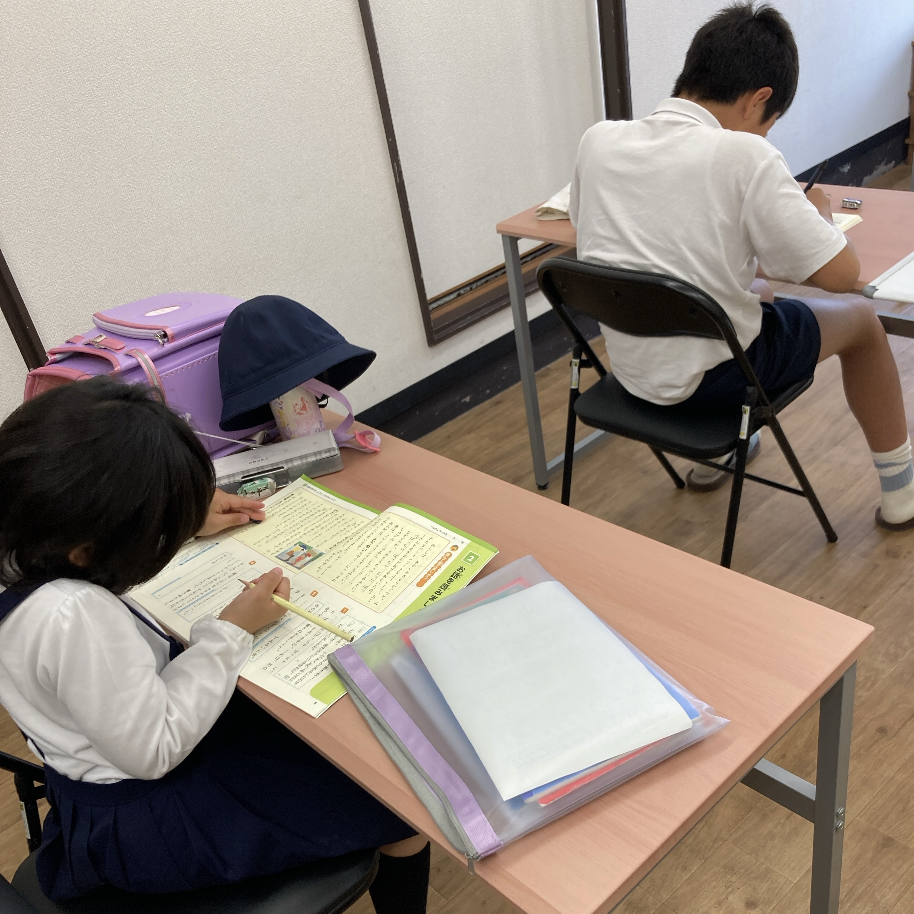
入塾までの流れ
まずはお気軽にお問い合わせください。
📌 はじめに
学習塾スタイルでは、入塾前に有料の体験版授業（30分）を受講することができます。受講後に勧誘は一切いたしませんので、入塾をご検討の方、一度受講してみたいとお考えの方はお気軽にお申込みください。
まずはここから
まずはお電話から、お問い合わせください。その後、必要事項を確認し体験版授業の予約をしていただきます。日時はご相談の上、決定いたします。
体験版授業の受講料は1,000円（税込）となります。
📞 084-975-4851
※仮に入塾となった場合に、希望される曜日と時間のコマも確認させていただく場合がございます。
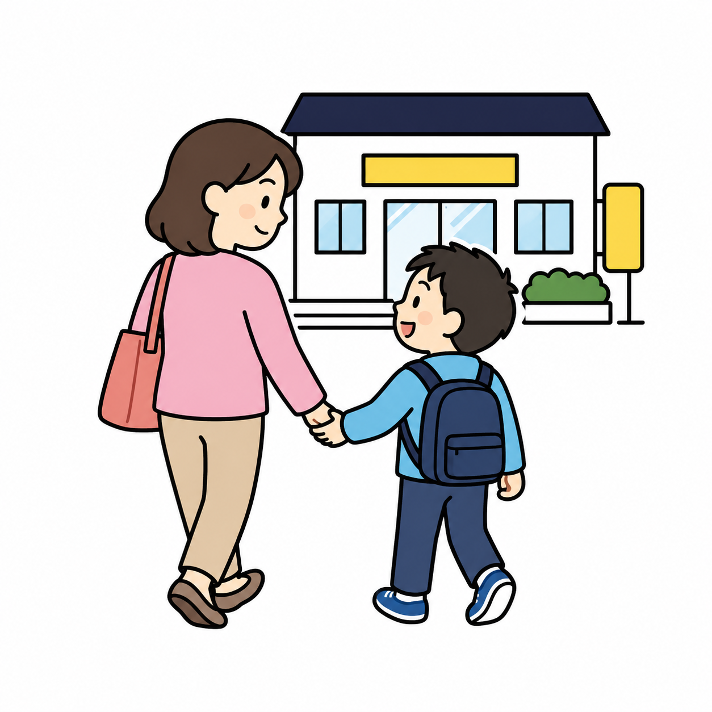
予約日に塾へお越しください
ご予約をいただいた日に、塾へお越しください。授業を受けていただく前に、面談とヒアリングを行い、30分の体験版授業の実施となります。
必ずお子さまに保護者がお付き添いのうえお越しください。
お子さまは筆記用具のみご持参ください。
体験版授業受講後
体験版授業を受講していただき、問題がないようであれば、入塾手続きとなります。手続きの際に必要な初回費用は以下のとおりです。
初回費用の入金をもって正式な入塾となり、ご希望のコマを確保いたします。
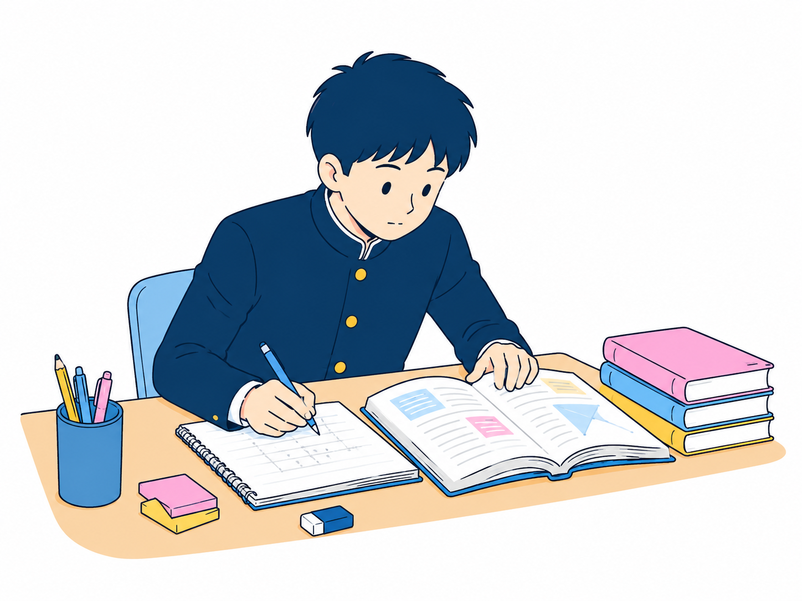
入塾後
入塾後にかかる料金は月の授業料のみです。授業料は月謝制となっております。（進級時には新しいテキストをご購入いただく必要があります）
必要な金額は以上です。ここに記載した以外の費用は一切かかりません。
なお、夏休み・冬休みなど長期休みの期間は別に講座を設けることもあります。これらの季節講座の受講は強制ではありません。必要がなければ通常通りの授業を行います。
まずはお気軽にご連絡ください
📞 今すぐ電話する